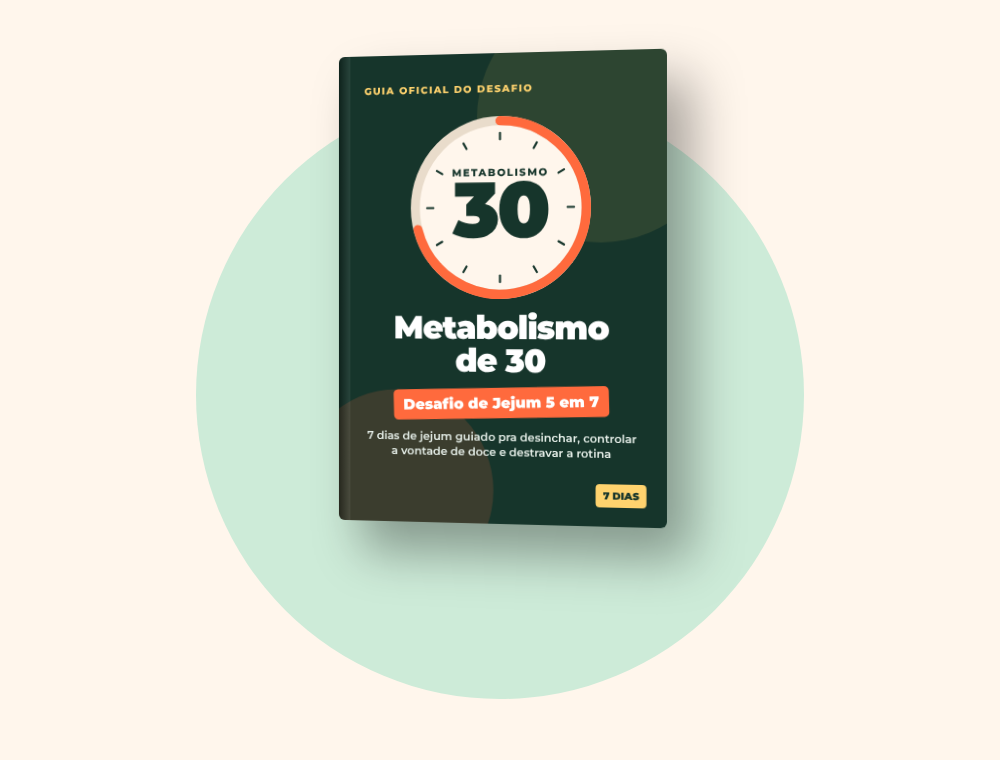

teste gratuito · 2 minutos
Qual a idade do seu metabolismo?
Responda 20 perguntas rápidas e descubra se o seu metabolismo está mais velho que você e o que fazer nos próximos 7 dias.
Qual a sua faixa de idade?
Depois dos 35, o corpo muda as regras do jogo
Menos massa muscular, hormônios mudando e uma rotina mais corrida fazem o corpo gastar menos e guardar mais.
É por isso que a dieta que funcionava aos 25 para de funcionar. Não é falta de força de vontade.
Qual a sua altura?
Qual o seu peso atual?
Como você descreveria sua barriga hoje?
Quantas vezes você já emagreceu e engordou de novo?
Nos últimos 2 anos, o que aconteceu com o seu peso?
Você não está sozinha
O efeito sanfona é um dos sinais mais comuns de um metabolismo que aprendeu a se defender: cada dieta radical ensina o corpo a guardar mais na próxima vez.
A boa notícia: dá pra reeducar esse ritmo sem passar fome. Siga respondendo.
Como você se sente depois de comer pão, massa ou arroz?
Você sente vontade forte de doce durante o dia?
Como está o seu nível de estresse no dia a dia?
Como é a qualidade do seu sono?
Onde você mais quer ver diferença?
Pode marcar mais de uma
Como funciona o jejum 5 em 7
- 5 dias de jejum guiado, com a janela crescendo aos poucos (12 h → 16 h). A maior parte acontece enquanto você dorme.
- 2 dias de pausa pra o corpo não entrar em modo defesa.
- Cardápio pronto pra quebrar o jejum sem cair no doce.
Sem remédio, sem shake, sem contar caloria.
Como funciona o seu intestino?
Quando você faz dieta, o que acontece?
Como fica a sua energia ao longo do dia?
Você já tentou fazer jejum?
Em que hora do dia a fome aperta mais?
O que você mais quer sentir daqui a 7 dias?
Pra finalizar: como você se chama?
Usamos só pra montar o seu resultado. Nada é enviado.
Calculando a idade do seu metabolismo…
- Analisando peso e altura
- Cruzando sono, estresse e energia
- Avaliando inchaço e intestino
- Medindo a resposta à dieta
- Montando seu plano 5 em 7
Ana, seu metabolismo tem 54 anos
Metabolismo Travado
o que fazer agora
O seu plano é o Desafio de Jejum 5 em 7
apresentando
Metabolismo de 30 · Desafio de Jejum 5 em 7
Um plano de 7 dias, passo a passo, pra você desinchar, controlar a vontade de doce e destravar a rotina com um jejum que respeita a sua idade. Sem remédio, sem shake e sem passar o dia com fome.

Sua semana
Sua janela sugerida: comer das 10h às 18h.
O que você recebe
Guia do Desafio 5 em 7
Os 7 dias explicados um a um: horário da janela, o que tomar no jejum, como quebrar o jejum e a tarefa do dia.
Cardápio dos 7 dias
Café, almoço e jantar dentro da janela, com comida de mercado comum.
Plano SOS Fome
O que fazer nos 3 momentos em que a fome aperta, pra não largar no dia 2.
Lista de compras + Diário de 7 dias
Imprima ou use no celular: marque cada dia, a água e como você se sentiu.
Depois do dia 7
Como manter o ritmo sem voltar pro efeito sanfona.
Faça o desafio. Se não gostar, peça o reembolso em até 7 dias e recebe 100% de volta. Sem pergunta.
Perguntas frequentes
Vou passar fome?
A janela começa em 12 h (por exemplo, das 20h às 8h), que é praticamente a sua noite de sono. Ela cresce aos poucos e o guia traz o que tomar e o que fazer quando a fome aparece.
Funciona depois dos 40 ou 50?
O desafio foi pensado pra mulheres a partir dos 35, com janela progressiva e 2 dias de pausa por semana. Resultados variam de pessoa pra pessoa.
Preciso comprar shake, chá ou suplemento?
Não. O cardápio usa comida de mercado comum.
Como recebo?
Logo após o pagamento você recebe o acesso no e-mail. O material é digital (PDF) e abre no celular.
Quem não deve fazer?
Gestantes, lactantes, menores de 18, pessoas com diabetes em uso de medicação, com histórico de transtorno alimentar ou qualquer condição de saúde: converse com seu médico antes de começar.